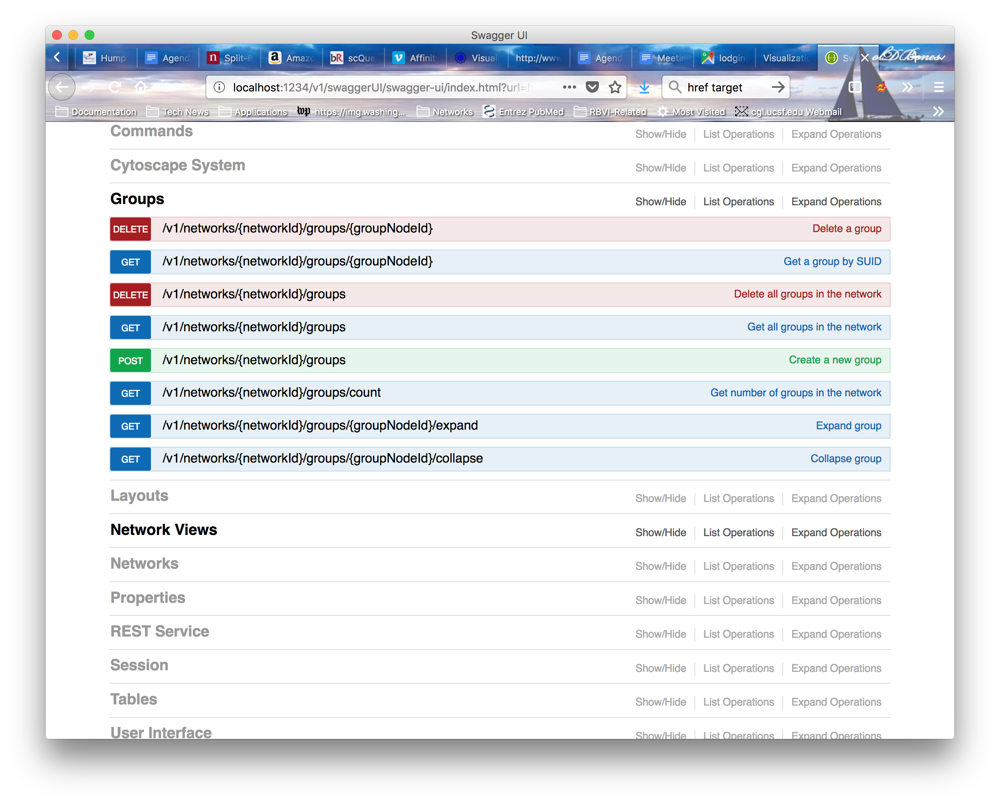
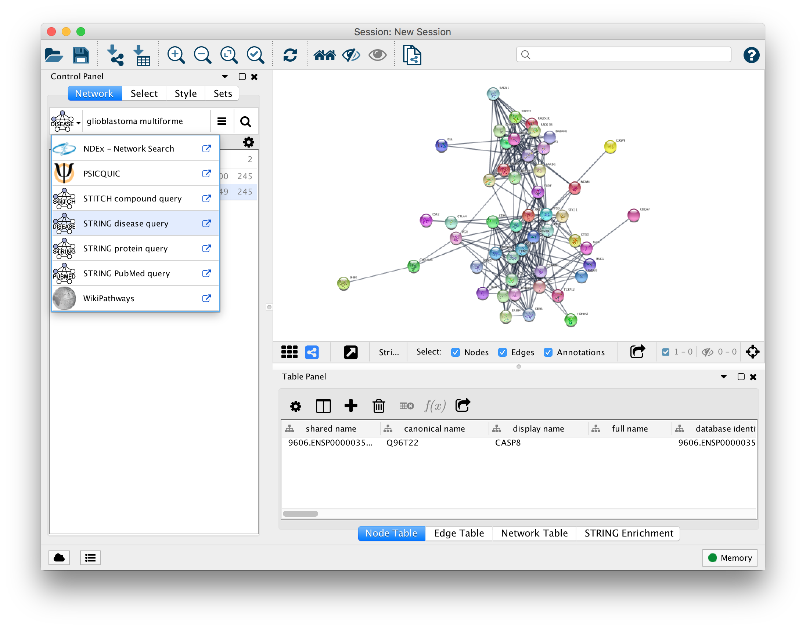
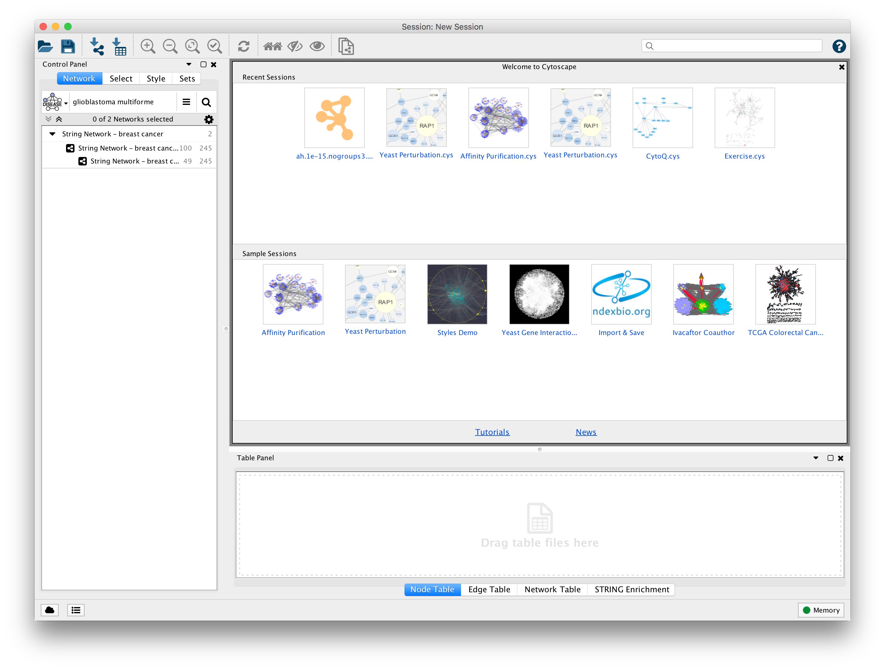

3.6.1
3.6.1
Visualizing and Analyzing Biological Molecules and their Interactions
UCSF ChimeraX and Cytoscape Coming Attractions
John "Scooter" Morris
Resource for Biocomputing, Visualization and Informatics
University of California, San Francisco
This slide deck available at:
https://rbvi.github.io/chimera-tutorials/presentations/EBI-2018.html
Cytoscape updates
- Key 3.6 features:
- Automation
- Network search panel
- Starter panel
- New Core apps:
- New yFiles layouts
- Diffusion
- Copy layouts between networks (copyCatLayout)
- CyBrowser
- NDEx Integration
- JVM installation
- Key 3.6 features:
- Automation
- Network search panel
- Starter panel
- New Core apps:
- New yFiles layouts
- Diffusion
- Copy layouts between networks (copyCatLayout)
- CyBrowser
- NDEx Integration
- JVM installation
Cytoscape automation

- Major focus for Cytoscape 3.6
- Additional CyREST and Command functionality
- Commands and CyREST interfaces are more consistently documented
- Now provide Swagger web pages for both CyREST and Commands
- Released new versions of RCy3 and py2cytoscape
- See https://github.com/cytoscape/cytoscape-automation for examples and workflows
Network Search Bar

- Eases access to network and pathway repositories
- Users can type or paste queries directly in search bar
- New API provides easy access to functionality for Apps
- Currently supported by:
- stringApp
- GeneMania
- PSIQUIC
- WikiPathways
- NDEx
Starter Panel
Easy access to previous sessions and example starter sessions
Cytoscape updates
- Planned 3.7 features:
- Performance
- Significantly improved startup performance
- Improved CyTable size and performance
- Crash logging
- User Interface
- Improved UI for preference settings
- Improved UI for command execution
- Support for color palettes (e.g. Brewer colors)
- Modal interface to support improved annotations interface
- Better CyBrowser integration
- Automation
- Improved cyREST coverage
- REST (and command) interface to filters
- Java 9 (10?, 11?) compatibility
- Improved app updating
- Performance
Bringing it all together: pE-MAPs
Acknowledgements
- Krogran lab @ UCSF
Stefan Bohn
- Chimera Team @ UCSF
- Tom Ferrin
- Conrad Huang
- Greg Couch
- Eric Pettersen
- Tom Goddard
- Elaine Meng
- Cytoscape team
- Ideker lab @ UCSD
- Barry Demchak
- Kei Ono
- Brett Settle
- David Otasek
- Bader lab @ UToronto
- Christian Lopes
- Mike Kucera
- Max Franz
-
- Gladstone Institutes
- Alex Pico
- Kristina Hanspers
- Adam Triester
- Gladstone Institutes
- Ideker lab @ UCSD